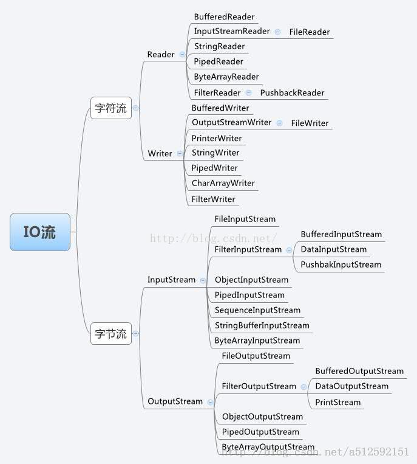

设计模式与应用--装饰器适配器模式与IO
一开始学习Java时，就对其中I/O流中的纷杂的类别感到很困惑，需要设计这么多类吗？后来了解到在处理流数据的时候不同的场景都有不同的需求。装饰器和适配器模式是贯穿在Java的I/O流设计中的重要的两个设计模式。
我们先来看一下Java的I/O流的类都有哪些吧：

有点眼花缭乱的感觉，其实可以按照功能进行分类。
按照流的形式分类：
字节流和字符流：字节流可以处理一切的计算机数据，包括文本、图像、音频、视频等；而对于文本数据，由于存在不同的编码问题，交由字符流处理。
按照流的方向分类：
输入流和输出流：用内存作为参照物，如果是要加载数据到内存中的流就是输入流；如果是要内存中的数据传输到其它地方，例如：存到磁盘、传给别的网络、打印打显示屏，此时就是输出流。
还记得在写爬虫时，用原始的URLConnection进行网络请求时，为了解析获取的网页源码的字符串，要获得网络字节流，有这样一段代码：
1 | BufferedReader in = new BufferedReader(new InputStreamReader(conn.getInputStream(),charSet)); |
这里面出现了3个流对象：conn.getInputStream()返回的InputStream，InputStreamReader和BufferedReader。为什么新建一个BufferedReader需要这么多的流对象作为构造函数的参数传递呢？其实这里就是两种设计模式的应用：装饰器模式和适配器模式（这两种都属于结构型模式）。
装饰器模式
装饰器模式就是向一个现有的对象加入新的功能，这种添加是动态的，不同于直接继承这个类添加新的方法（静态添加）。装饰对象和被装饰对象实现同一个接口，装饰对象持有被装饰对象的实例。实例如下：
1 | public class InputStreamReader extends Reader { |
BufferedReader就是为对一个流的操作添加了带缓存的操作，可以看到类中提供了一个read方法，其对基础类的read方法进行了包装，以下的操作每次都会在预定义的缓冲区进行处理。
1 | public int read(char cbuf[], int off, int len){ |
装饰者模式的修改比较灵活，而且还可以组合使用，因此可以看到有多层装饰类的嵌套的使用情况。
适配器模式
适配器模式的定义: 使原本不能使用的类或接口兼容起来。主要有三种情况：类适配、对象适配、接口适配。
在上面的例子中，我们需要使用Reader字符流来解析我们在网页上看到的字符信息, 但是打开网络连接我们能够获得的只有InputStream字节流。我们可以将InputStream带上一个编码，告诉InputStreamReader，由它来完成转换的工作。
1 | public InputStreamReader(InputStream in, String charsetName) |
StreamDecoder是Sun公司提供的一个解码器，从而可以将字节流转换为我们能够进行处理的字符流。